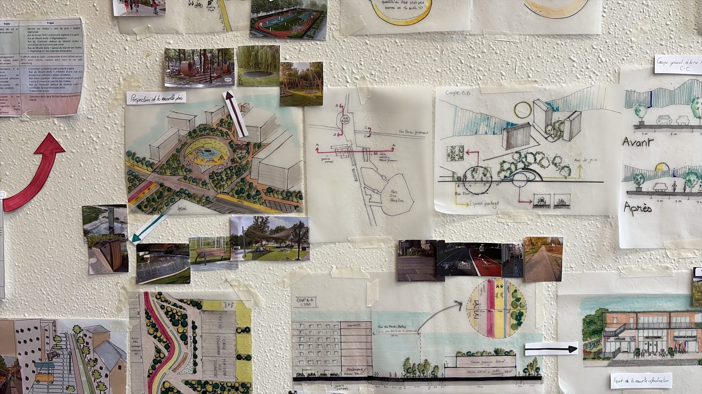

avr. 2026
Le fil vert de la jeunesse : reconnecter les espaces publics d'un quartier minéralisé pour en faire un cœur de vie apaisé et végétalisé.
Lors d'une semaine intensive de projet organisée avec le CAUE 92, nous avons repensé le secteur des Vallées, à La Garenne-Colombes et Bois-Colombes. Le quartier présente un tissu très urbain et hétérogène (mixte pavillonnaire et immeubles collectifs denses). Si l'offre en transports en commun y est bonne, facilitant notamment le trajet vers La Défense ou Paris, les trames de mobilités douces restent discontinues. Combinée à une population jeune et active, cette situation entretient une forte dépendance aux transports motorisés. Il en résulte une pollution atmosphérique et sonore marquée le long des grands axes.
Le diagnostic a conduit à cibler le quartier du marché des Vallées. Il s'agit d'un des secteurs aux revenus médians les plus modestes de la commune où la végétation relève presque exclusivement du domaine privé, ce qui prive le quartier de tout réservoir de biodiversité contrairement au reste du territoire. Cette minéralisation se traduit par des températures de surface élevées (confirmées par une analyse de différenciation thermique à partir d'imagerie satellite), et met en évidence la nécessité de reconfigurer l'espace public. L'enjeu est de transformer ce quartier selon le concept de « ville du quart d'heure » en rapprochant les habitants des commerces de proximité grâce au développement des mobilités douces. Notre projet, « Le fil vert de la jeunesse », associe désimperméabilisation, végétalisation et apaisement des circulations pour relier les principaux lieux de vie du quartier.
La programmation d'aménagement qui en découle s'organise par enjeux :
Sur la mobilité, elle prévoit une zone 30 autour du marché, la suppression de places de stationnement au profit d'espaces piétons et cyclables, des pistes cyclables et trottoirs élargis jusqu'à la gare et au parc des Bruyères, ainsi qu'un concept de rue aux écoles sur la rue du Moulin Bailly pour sécuriser les sorties scolaires.
Sur les usages, il s'agit de transformer le dôme du marché couvert en espace de jeux, d'implanter des commerces alimentaires de proximité en rez-de-chaussée et de créer une infrastructure mêlant crèche, maison pour tous et café coworking à proximité du stade.
Sur la végétalisation, le projet vise une véritable forêt urbaine continue depuis la nouvelle esplanade du marché ouvert jusqu'au nord de la commune, en lien avec la promenade verte existante, afin de réduire le risque d'îlot de chaleur.
